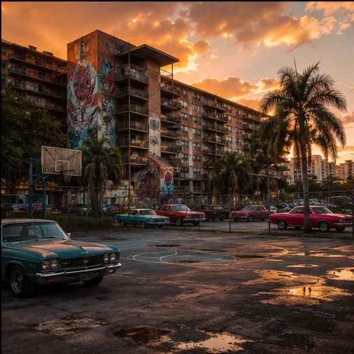
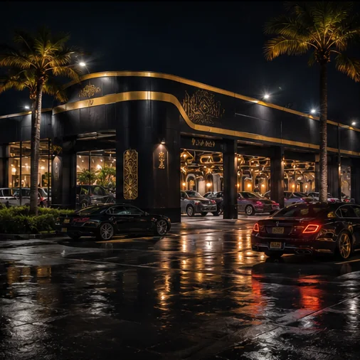
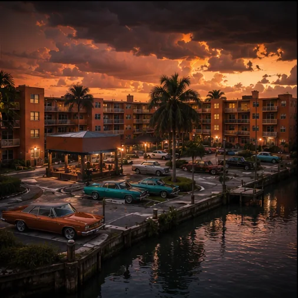
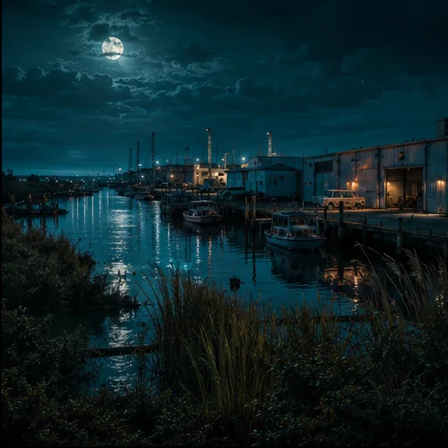
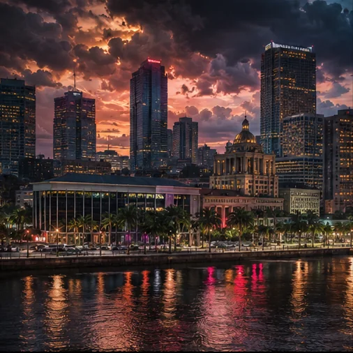
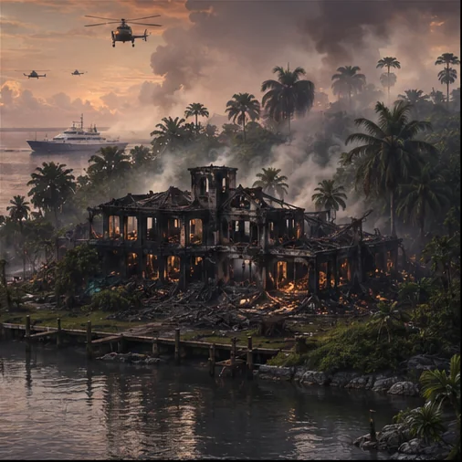

The Ridge
Sunridge Gardens
Home of the Back Court, Garden Courts and the community that Reck refuses to surrender.
The official world of the story
A Florida city where neighborhoods fight to survive while money, law and corruption redraw the map above them.
Cinematic location archive
Six central locations connecting the Crown, the Halo and the hidden Palm Haven Network.

The Ridge
Home of the Back Court, Garden Courts and the community that Reck refuses to surrender.

Ridge headquarters
A rebuilt car wash, neighborhood command center and symbol of power redirected toward community ownership.

The Halo
The Haven Boyz homeland, where Khaos rebuilds D-Low’s legacy and chooses what the next generation will inherit.

Canal territory
Industrial canals, marsh routes and the dangerous edge where Cell and Tide turn water into power.

Power above the streets
Banks, courts, government towers and Meridian money—the polished skyline hiding the city’s deepest corruption.

Saint’s fallen island
The burned island estate where Reck recovered his family and Gabriel Saint escaped with the master drive.